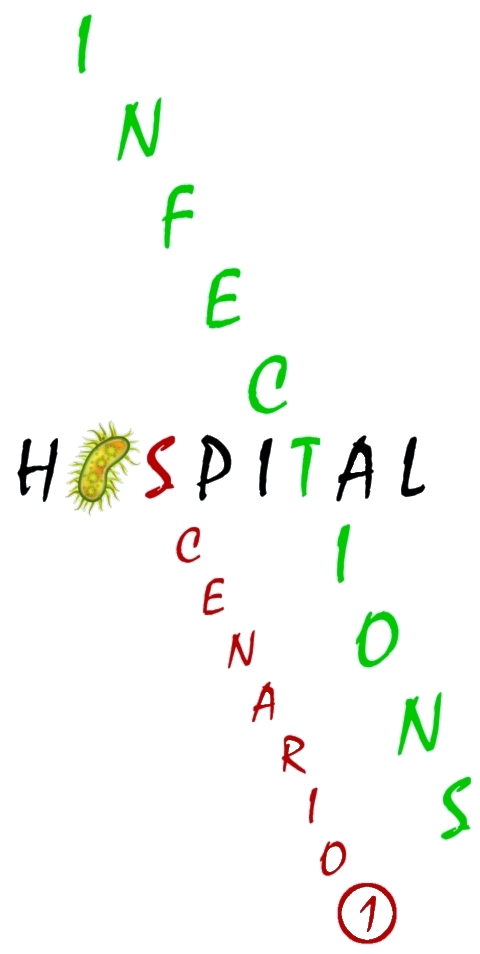

I am a Lecturer in the School of Mathematics at the University of Leeds, and an MRC fellow, being the PI for the MRC funded project
In this project, my aim is to develop new stochastic models (and new mathematical tools for analysing them) regarding the spread of bacteria in hospital settings. My hope is to identify the most probable routes of bacterial spread in these settings, and to identify the most effective control strategies that can be applied, by using hospital data and Bayesian statistical techniques for parameter estimation.
I am a member of the Mathematical Biology and Medicine Group at the University of Leeds, and of the Stochastic Modelling Group at the Complutense University of Madrid. I carry out research in Mathematical Modelling in Health & Disease, and I am interested in a variety of processes involved in Infection & Immunity, including the analysis of the immune response, the within-host modelling of viral and bacterial infections, as well as the analysis of population-level epidemic processes.
I also collaborate in the
You can find my publications below. Press on the title of any given publication and you will be redirected to the paper site.
This videogame shows how a discrete-time Markov chain works. This particle moves, at each step, one unit to the left with probability p, and to the right with probability 1-p. Position 9 is a reflecting barrier, so that if the particle is at position 9, it moves left in the next step with probability 1. Position 0 is an absorbing barrier, so that the particle stops once it reaches position 0. Can you guess how many movements are needed for reaching position 0? Choose a value for p, a starting position, simulate the process 100 times and observe how long it takes for the particle to reach position 0 in each simulation.
This videogame shows how we can use stochastic processes to simulate the spread of a hospital-acquired (nosocomial) infection in an intensive care unit. You need to allocate 8 patients in 8 different beds. Press a bed to allocate a patient, and press again to remove the patient from that bed. Once the 8 patients have been allocated, press "Simulate Bacterial Outbreak". The computer will simulate a bacterial outbreak in this intensive care unit, and predict how many patients (histogram and average) will get infected during the outbreak. Try different configurations until you find the best allocation of patients leading to the smallest outbreak. Note that patients sharing the same room are more likely to infect each other.
|  |
In this scenario, there are some patients (pink color) suffering from a chronic disease. It has been estimated that patients suffering from this disease take four times as long to recover from a bacterial infection than non-chronic patients (black color). You need to allocate 4 non-chronic and 4 chronic patients in 8 different beds. Press a bed once to allocate a non-chronic patient, press again to allocate a chronic patient, and press again to remove the patient from that bed. Once the 8 patients have been allocated, press "Simulate Bacterial Outbreak". The computer will simulate a bacterial outbreak in this intensive care unit, and predict how many patients (histogram and average) will get infected during the outbreak. Try different configurations until you find the best allocation of patients leading to the smallest outbreak. Note that patients sharing the same room are more likely to infect each other. Is it better to allocate chronic and non-chronic patients in different rooms? Or is it better to mix them up?
In this scenario, we deal with a bacteria that spreads through the air, and we are given the opportunity to design the indoor ventilation of the hospital. This ventilation will have an impact on how the bacteria spreads, so you need to be wise choosing the best possible ventilation setting to avoid the spread of the bacteria. You can choose among three ventilation settings, and you can also choose where the patient starting the bacterial outbreak is located (by pressing on a bed). Once you are ready, press "Simulate Bacterial Outbreak". The computer will simulate a bacterial outbreak in this intensive care unit, and predict how many patients (histogram and average) will get infected during the outbreak. Try different configurations until you find the best ventilation setting for each possible location of the patient starting the outbreak.
If you are interested in my research, or would like to enquiry about the possibility of carrying out a PhD in this research area -Mathematical Biology, Immunology and Epidemiology-, please drop me an email.